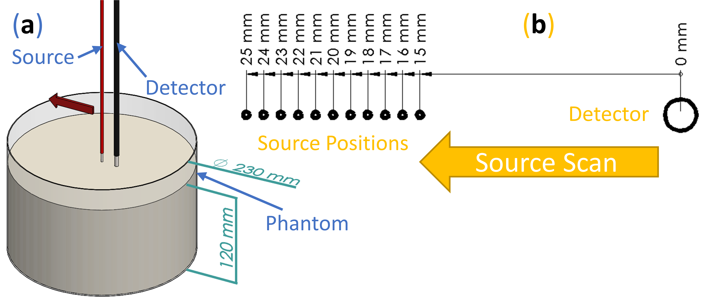
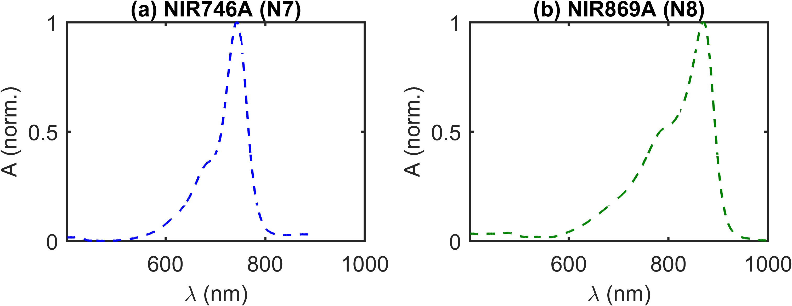
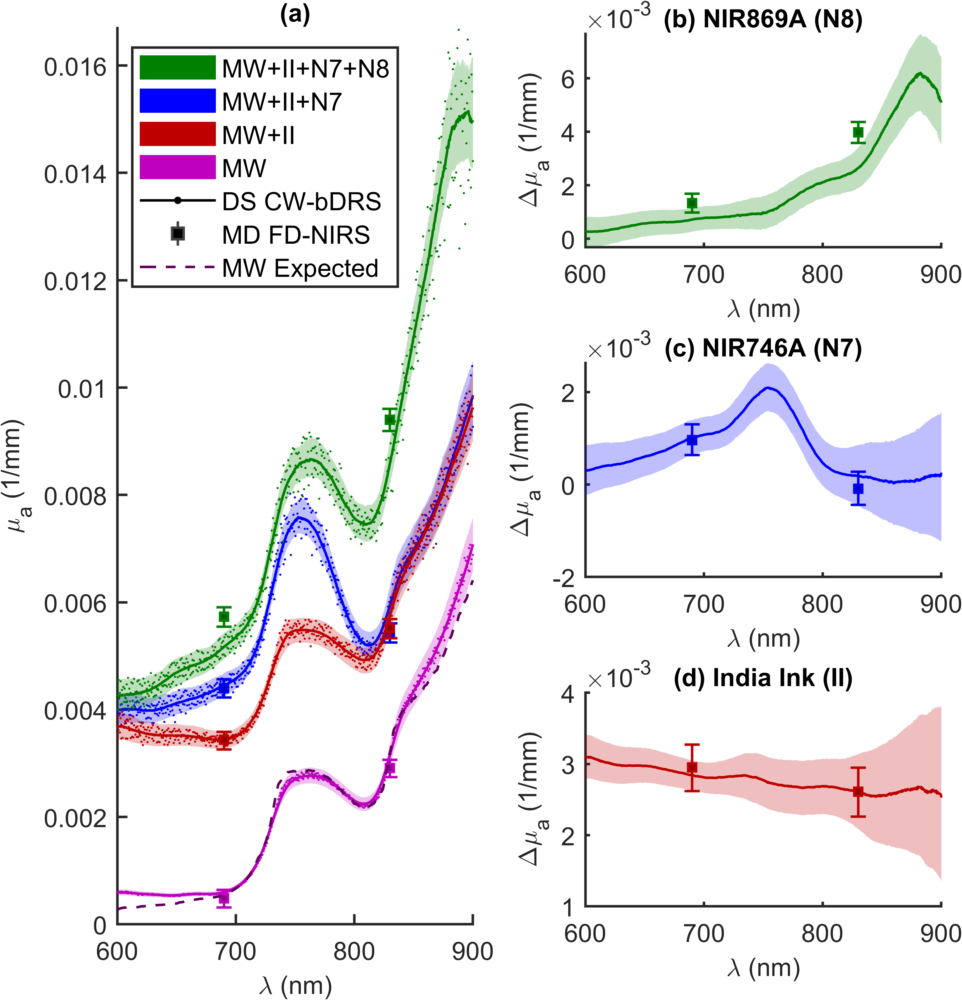
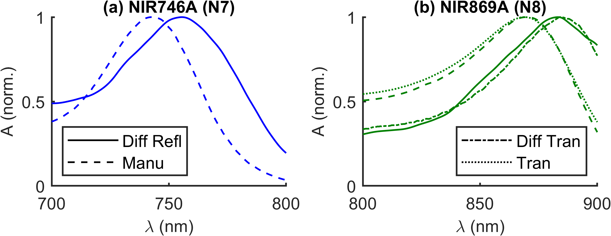

Dual-Slope Based Absolute Broadband-Spectroscopy
Dual-Slope Based Absolute Broadband-Spectroscopy
Motivation for Dual-Slope Based Spectroscopy
presented the design and validation of an instrument for DS bDRS. This instrument afforded calibration-free, CW measurements of broadband absorbance of optically diffusive media, which may be translated into absolute μa spectra by adding FD measurements of μ′s at two λs. μa and μ′s are the chief quantities of interest in the field of diffuse optics and diffuse biomedical optics , and they feature a λ dependence that is often of crucial importance. In the case of most biological tissues, the dominating scattering condition of diffuse optics is realized in the optical window used by NIRS. Measurements of the λ dependent μa of tissue yields information about the concentration of chromophores with known ε spectra, while measurements of μ′s spectra yields structural information related to the size and density of scattering centers .
The primary difficulty in these measurements is the decoupling of μa and μ′s contributions to the measured optical signal. Both FD and TD are capable of doing this . In FD both μa and μ′s may be measured using the spatial dependence of ln(ρ²I) and φ to retrieve μ̃eff as discussed in Appendix [app:absOptPropMeas]. The chief complication of this technique is calibration, since each source-detector pair may have differing instrumental contributions (because of the individual source emission and detector sensitivity properties as seen in Chapter [ch:DSintro]) and differing coupling factors between optodes and sample. A method which compensates for the differing instrumental contributions is the so-called MD scanning, where either the source or the detector is moved across the surface of the optical medium . In doing so, the instrumental factors remain the same for each ρ (same source and same detector used for each distance) and thus the measurement of slope is independent of these factors. However, differing coupling factors may still be present if during the scan the source (or detector) moves away or toward the tissue surface (in a non-contact case), or experiences a variable contact pressure (in a contact case). Aside from MD scanning, the SC/DS method is also capable of making absolute measurements . This is since calibration factors cancel in the averaging of slope as shown in Chapter [ch:DSintro]. When the SC / DS optode geometry (Figure [fig:DSset]) is used for only measurement of one optical data-type it is named DS instead of SD. When used in CW only R is retrieved, so the method is referred to as DS. Using CW DS the calibration-free absolute μeff can be retrieved, similar to how calibration-free absolute μ̃eff can be retrieved from SC FD.1
One of the limitations of time-resolved NIRS methods, such as FD NIRS, is the added instrumental complexity compared to CW. There has been work in broadband time-resolved spectroscopy , however, such instruments require complex instruments (super-continuum lasers, single photon counting, and instrument response calibration). Because of this, the norm in time-resolved NIRS methods is the use of two or a few λs as opposed to a continuous broadband spectrum . In contrast, CW methods may use broadband light sources, such as halogen lamps, and spectrometer detectors, since there is no need for measurements of fast temporal characteristics. These spectroscopic methods in CW lead to the name bDRS due to their collection geometry and use of a spectrometer as a detector (instead of APDs or PMTs typical in time-resolved methods). Therefore, CW bDRS has the advantage of collecting data over many λs but the disadvantage that μa and μ′s are coupled within μeff do to the use of CW illumination. A solution that has become more and more common is to combine a time-resolved NIRS instrument at few λs with a CW bDRS system . Such a technique allows extrapolation of scattering from few to many λs, by assuming a power law decay of μ′s with λ , and decoupling of μa from μeff retrieved from the CW bDRS data (Appendix [app:absOptPropMeas]).
At this point, a small note on nomenclature is valuable. The acronym combination MD FD NIRS refers to a FD method capable of measuring absolute μ̃eff (which can separate μa and μ′s) at discrete λs from measurements at multiple ρs. The acronyms DS CW bDRS refers to a technique capable of measuring λ-resolved calibration-free μeff (which depends on μa and μ′s) over a range of many λs. It is noted that the distinction between SC and DS is the use of R̃ in SC FD versus R in DS DS (Appendix [app:absOptPropMeas]).
Techniques, Experiments, and Absolute Absorption Retrieval
Techniques
Frequency-Domain Multi-Distance Near-Infrared Spectroscopy

Note 1: This figure can be found as Figure 1 in .
FD NIRS was implemented with the purpose of measuring absolute μ̃eff (to retrieve μa and μ′s) of highly scattering media. The Imagent whose parameters were stated in Section [ch:shortLong:sec:MDmethExpPara] was used for this purpose.
FD NIRS was implemented in a MD scan. To achieve this, a single detector fiber bundle (3 mm) was held at a fixed location and two co-localized source fibers (600 μm; two λs) were scanned via a linear stage (Figure 1.1(a)). In doing so, the R̃ (amplitude and phase) was measured at 11 distances (from 15 mm–25 mm spaced by 1 mm; Figure 1.1(b)). This MD scan allowed for measurements of R̃ slopes versus ρ without the need for calibration.2 These measurements were used to calculate the absolute μ̃eff and then the absolute μa and μ′s of the diffuse medium as described in Appendix [app:absOptPropMeas].
Continuous-Wave Dual-Slope Broadband Diffuse Reflectance Spectroscopy

1 and 2)
and detector (A and B) positions on the DS
bDRS probe.Note 1: This figure can be found as Figure 2 in .
Acronyms: Universal Serial Bus (USB); and Transistor-Transistor Logic (TTL).
CW bDRS was implemented in with the purpose of measuring absolute μeff spectra of optically diffusive media (Figure 1.2(a)). This was realized using a DS optode geometry which allowed for calibration-free measurements of the CW R slope (versus ρ). The DS optode configuration (Figure 1.2(c)) used was the same as described in and Figure [fig:DSset]; it contained 2 source positions and 2 detector positions. The linearly symmetric arrangement resulted in a calibrated measurement from 25 mm–35 mm.
This DS CW
bDRS system was custom built
to achieve the multiplexing needed for DS measurements. The
measurement requires the R signal be acquired from all
combinations of sources (named 1 and 2;
Figures 1.2(c)&[fig:DSset])
and detectors (named A and B; Figures 1.2(c)&[fig:DSset]).
To do so, both the sources and detectors must be multiplexed (Figure 1.2(b)). Sources were multiplexed by
using 2 shuttered HAL light sources, each
connected to 1 source position. Shutter state was controlled via a TTL
signal from an Arduino micro-controller which
was connected to the control computer via USB. Light was delivered from
the sources to the probe using 2 mm fiber bundles. The light sources
output an approximate black-body spectrum with a temperature of about
2650 K (peak at about 1000 nm). On the detector side, diffuse CW
light was collected using a 600 μm fiber at each of the 2 detector
positions. Multiplexing of the detector positions was done using a LBMB
fiber switch where the common end was connected to a HERO
spectrometer via a 600 μm fiber. The spectrometer was configured with a
500 μm slit and collected 1024 λs between about
498 nm–1064 nm.
The bottleneck in the multiplexing sequence is the switching time of
the LBMB fiber switch. Because of
this, the cycle of source-detector position combinations was optimized
to minimize LBMB actuation. Naming
source-detector combinations as source number (1 or
2) then detector letter (A or B;
Figure 1.2(c)) an example measurement sequence
could be:
...1A]\(\rightarrow\)[1A2A2B1B]\(\rightarrow\)
[1B2B2A1A]\(\rightarrow\)[1A...
where, is a source switch, is a detector switch, and the square brackets show one full DS set acquisition. The R from each source-detector combination is linearly interpolated to the average absolute time for their corresponding DS set. Thus 4 R measurements that contribute to a DS measurement are effectively synchronous, thus preventing potential temporal artifacts when studying dynamic samples or biological tissue.
Validation Experiments

Note 1: This figure can be found as Figure 3 in .
The purpose of the experiments in was to validate the DS bDRS instrument. This was done using a liquid optical phantom which was measured at different dyes concentrations to confirm the DS CW bDRS’s ability to distinguish spectral features and measure absolute μa. A total of 5 L of the phantom was made, and placed in a cylindrical tank (Figures 1.1(a)&1.2(a)). The base of the phantom was made of 2 % reduced fat milk and W (43 % milk and 57 % W volume fraction) such that the scattering properties were similar to those of biological tissue in the near-infrared range. The μ′s was assumed to not change as dyes were added since the addition of the dyes is expected to have a negligible effect on scattering. Each time the phantom was measured, the measurement was done by both MD FD NIRS and DS CW bDRS.
Three dyes were added in the following order: II, N7, and N8. II is expected to have a relatively flat or decreasing μa spectrum with λ in the near-infrared range . By contrast, N7 and N8 are expected to have μa peaks at around 746 nm, & 869 nm, respectively (Figure 1.3). However, the actual peak λ may shift depending on the chemical properties of the solvent according to the dye documentation and previous experiments .
The measurements and dye additions proceeded as follows (measurements meaning both MD FD NIRS and DS CW bDRS). First, the milk and W base phantom was mixed, then measured. Then, II was mixed in and the phantom measured again. Next N7 was mixed and again the phantom measured. Finally, N8 was also mixed into the phantom and the measurement was done for a final time. The amount of each addition of dye was such that all μa spectra were expected to stay within typical μa values of biological tissue (approximately 0.005 mm–0.020 mm ).
The temporal sampling parameters of the DS CW bDRS system were set to yield a relatively fast sampling rate while still measuring a relevant λ range. Along these lines, DS CW bDRS data were analyzed between 600 nm–900 nm and the sampling rate was set to 2.5 Hz. For DS CW bDRS 5 min of data were averaged for analysis. The MD FD NIRS measurement took 30 s at each step for a total measurement time of 5.5 min (11 steps; Figure 1.1), and had a sampling rate of 2.8 Hz. These parameters were chosen such that the rate and time of DS CW bDRS and MD FD NIRS were approximately equal.
Therefore the phantom experiments in resulted in MD FD NIRS measurements of μ̃eff at 2 λs and DS CW bDRS measurements of μeff between 600 nm–900 nm for four phantoms (milk and W, milk and W plus II, milk and W plus II plus N7, and milk and W plus II plus N7 plus N7). Appendix [app:absOptPropMeas] describes the analysis of these data to result in these absolute μ̃eff and μeff.
Retrieval of Absolute Absorption Spectra
Since the DS CW bDRS method yields a real μeff, μ′s must be known to find μa using the following expression : \[\acrshort{mua}=\sqrt{\frac{\acrshort{musp}^2}{4}+\frac{\acrshort{mueff}^2}{3}}-\frac{\acrshort{musp}}{2} \label{equ:muaFROMmueffmusp}\] To address the need to know μ′s, the μ̃eff data from the MD FD NIRS measurements were used. FD NIRS yielded a measurement of μ′s at 2 λs (\(\acrshort{musp}_{\acrshort{FD}}(\acrshort{lam}_1)\) and \(\acrshort{musp}_{\acrshort{FD}}(\acrshort{lam}_2)\); where λ is the 2 from FD) from μ̃eff (Appendix [app:absOptPropMeas]). These \(\mu_s'_{\text{FD}}\) measurements are then extrapolated using the following expression based on b to find μ′s at all the λs used by bDRS: \[\acrshort{musp}(\acrshort{lam})=\acrshort{musp}_{\acrshort{FD}}(\acrshort{lam}_1) \times \left( \frac{\acrshort{lam}}{\acrshort{lam}_1} \right)^{-\acrshort{b}} \label{equ:scatPowLaw}\] \[\acrshort{b}={\frac{\ln\left[\acrshort{musp}_{\acrshort{FD}}(\acrshort{lam}_2) / \acrshort{musp}_{\acrshort{FD}}(\acrshort{lam}_1) \right]}{\ln\left[ \acrshort{lam}_1/\acrshort{lam}_2 \right]}} \label{equ:scatb}\] Therefore, when analyzing DS CW bDRS data, μa is found for each λ using the assumed μ′s expressed above for each λ.
Results from Validation Experiment

Note 1: This figure can be found as Figure 4 in .
The phantom experiment described consisted of measuring 4 phantoms, each with both MD FD NIRS (Figure 1.1(a)) and DS CW bDRS (Figure 1.2(a)). The phantoms were milk and W, that with II added, then that again with N7 added, and then that yet again with N8 added.
Figure 1.4 shows the results of this experiment. The absolute μa spectrum is shown across λs for all 4 phantoms and 2 measurement methods (Figure 1.4(a)). Additionally, Figure 1.4(a) shows a dashed line representing the modeled (as 99.1 % W and 0.9 % L volume fractions) μa of the milk and W phantom. The expected μa spectrum for this milk and W phantom was computed using the forward model for μa in Appendix [app:forMod]. The R² was calculated for the milk and W data and model, yielding a value of 0.98, implying that 98 % of the variance in the milk and W μa data is explained by the modeled milk and W ε spectra. In Figure 1.4(b)-(d) the Δμa as a result of adding the 3 different dyes (II, N7, and N8) is shown. The error regions in all plots are dominated by the systematic uncertainty in the ρ on the DS CW bDRS probe (estimated at ± 0.1 mm for chained dimensions) and within the MD FD NIRS measurement (estimated at ± 0.5 mm for initial position and ± 0.01 mm for scan pitch). Note the flat μa contribution from II and the spectral features from N7 and N8. Particularly, a peak between 700 nm–800 nm for N7 and a peak between 800 nm–900 nm for N8.
Discussion of Dual-Slope Broadband Spectroscopy Validation
The Milk and Water Absorption Spectrum
First, before any dyes were added in the validation experiment (just milk and W) the phantom was measured to yield an μa spectrum dominated by W (Figure 1.4(a)). This milk and W spectra had the expected spectral features of water (hump at about 750 nm and sharp increase starting at about 800 nm) . Further, the expected milk and W ε spectrum agrees (within error) with the experimental data for the spectral range between 690 nm–830 nm, where μ′s is interpolated (not extrapolated) from the MD FD NIRS measurement. Below 690 nm the agreement is lost likely due to the very low W μa, such that even low μa contributions from fat, proteins, or other milk constituents in the milk and W medium may become detectable. Above 830 nm the agreement also degrades possibly because of incorrect μ′s values (from extrapolation) or contributions from other absorbers in the milk other than W and L. Overall the quantitative agreement between the expected and measured milk and W spectra (Appendix [app:forMod]) are quite good with a R² of 0.98, indicating an accurate measurement of absolute μa by DS CW bDRS.
Comparing Frequency-Domain and Continuous-Wave Retrieved Absorption
Further, the μa measured by MD FD NIRS agrees within error with DS CW bDRS at all points of comparison except for N8. For N8 the difference between the measurements is about 10 %, and the combined errors for the 2 measurements amount to about 8 % (dominated by uncertainty in ρ). Admittedly, μ′s found by MD FD NIRS is used to find the μa for DS CW bDRS, and thus the measurements are related. However, the observed agreement demonstrates a reliable absolute measurement of the slope of R with the DS CW bDRS instrument, given the accurate measurements with the scanning MD method used by MD FD NIRS in controlled laboratory conditions. In the case of N8, where the 2 instruments do not agree, the most likely explanation is instrumental error (ρ uncertainty and boundary conditions). The ρ uncertainty accounts for most of the difference between the measurements, and the remaining unaccounted disagreement may be explained by uncertainties in boundary conditions (true depth of fibers in phantom, existence of meniscus, et cetera). These ρ uncertainties and boundary effects may have changed for each measurement, since after the addition of each dye the instruments needed to be re-setup and placed on the phantom. This may explain why instrumental errors impacted differently the measurements of different dyes. Additionally, there is evidence that the N7 and N8 dyes are not stable over time (discussed below) and the 2 measurements are not simultaneous (5 min–10 min between measurements). Any of these considerations may have lead to the lack of agreement for N8. However, given the existence of these considerations and the close agreement in 6 out of 8 cases, we find that the results serves to validate the absolute absorbance measured by DS CW bDRS.
The Additions of Dye to the Phantom

Diff Refl,
id est, in milk from validation experiment), provided by the
Manufacturer (Manu; id est in water), Diffuse
Transmitance (Diff Tran; id est, in milk), and
Transmission (Tran; id est, in water). (a) N7 dye.
(b) N8 dye.Note 1: This figure can be found as Figure 5 in .
Focusing on the individual dye additions allows for validation of the measurement of spectral features. The first dye added was II, which is expected to have a flat or decreasing spectral dependence with λ . The change in the μa spectrum observed confirmed this λ dependence and, again, agreed with the measurements at 2 λs with MD FD NIRS (Figure 1.4(d)). Further evaluation was carried out to estimate the recovered concentration of II given the measured Δμa. The true concentration (in volume fraction) of II in the phantom was 5.7 × 10−6 given the phantom volume and the amount of II added. The same II was measured in transmission in non-diffuse solutions of known concentrations to yield spectra of the μt (assuming only un-scattered light is detected). To yield the spectrum of μa (needed to recover concentration in the diffuse experiment) for II, the a must be assumed: \[\acrshort{mua}=\acrshort{mut} (1-\acrshort{a})\] This must be considered for II since it is not in solution in water but instead a suspension of carbon particles. λ independent values of \(a=\) 0–0.15 were assumed which yielded recovered concentrations of 5.2 × 10−6–6.1 × 10−6, respectively. This range of low a values of pure II indicates that its μs is much smaller than the μa coefficient, which is consistent with the literature . The range resulted in measurement errors of −8.8 %–7.0 % (given true value of 5.7 × 10−6). Therefore, it is expected that DS CW bDRS is capable of recovering accurate chromophore concentrations given that the ε spectra is known (not the case here since the a for II was not measured). For N7 and N8 the concentration recovery was not carried out due to temporal and spectral instability of the dyes (discussed below).
Moving on from II, the next 2 dyes were expected to feature a more interesting spectrum (Figure 1.3). N7 was added after II and the Δμa presented in Figure 1.4(c). The expected peak between 700 nm–800 nm was present. However, upon closer examination, the exact peak location is shifted about 12 nm higher for the DS CW bDRS measurement compared to the expected spectrum (Figure 1.5(a)). When the next and final dye, N8, was added, yet again there was a peak present in approximately the expected location (Figure 1.4(b)). But, as with N7 there was an about 12 nm shift to longer λs in the DS CW bDRS measurement. This is consistent with a bathochromic shift, which is possible for these dyes given the manufacturer information and previous studies . The hypothesis is that when in milk the dyes exhibit a bathochromic shift due to the different bulk polar nature of milk versus W. To test this possibility, 2 further measurements were done on N8. N8 was measured in transmission (in a semi-micro cuvette) both in water and in the milk and W mixture (Figure 1.5(b)). The results show that the transmission spectral absorbance for N8 in milk matches the DS CW bDRS peak location, whereas the transmission spectral absorbance of N8 in water matches the manufacturer provided spectra. Thus, this transmission experiment supports the hypothesis that these dyes exhibit a bathochromic shift of about 12 nm when in the milk and W mixture. However, it is unknown if the amplitude of the μa peak is also effected (hyperchromic or hypochromic shift) for these dyes. The dyes were also found to be temporally unstable, as extended time in solution caused N7 to lose its near-infrared μa peak, and N8’s peak shifted roughly 200 nm to the blue. These spectral and temporal instabilities stopped the analysis of the concentrations of these dyes in the diffuse phantom. But, despite this, DS CW bDRS was still capable of distinguishing the dye’s spectral features.
Summary of Dual-Slope Broadband Diffuse Reflectance Spectroscopy Validation
Summarizing the discussion above, the results in on the liquid phantom serve to validate the DS CW bDRS instrument’s ability to measure spectral features and absolute values of μa in a diffuse medium. In 6 of 8 cases (all except 690 nm, & 830 nm for N8), the absolute μa measured with DS CW bDRS agreed within error with MD FD NIRS. DS CW bDRS also accurately measured the expected μa spectrum of milk and W mixed (\(R^2=\num{0.98}\)). Additionally, the DS CW bDRS instrument correctly measured the flat spectra of II and the peaks of N7 and N8. The concentration of II was estimated suggesting the ability to recover chromophore concentrations given the extinction. Finally, it was confirmed that the recovered peak locations of the N7 and N8 dyes are what is expected for these dyes in milk. The follow chapter shows the application of this technique on biological tissue.
effective attenuation coefficient (μeff) can not be separated into absorption coefficient (μa) and reduced scattering coefficient (μ′s) as complex effective attenuation coefficient (μ̃eff) can. To find μa from μeff, μ′s must be known.↩︎
Without calibration assuming unchanging coupling with the sample since the same fibers are used for each distance and the fiber/sample contact remains about the same during the linear scan.↩︎